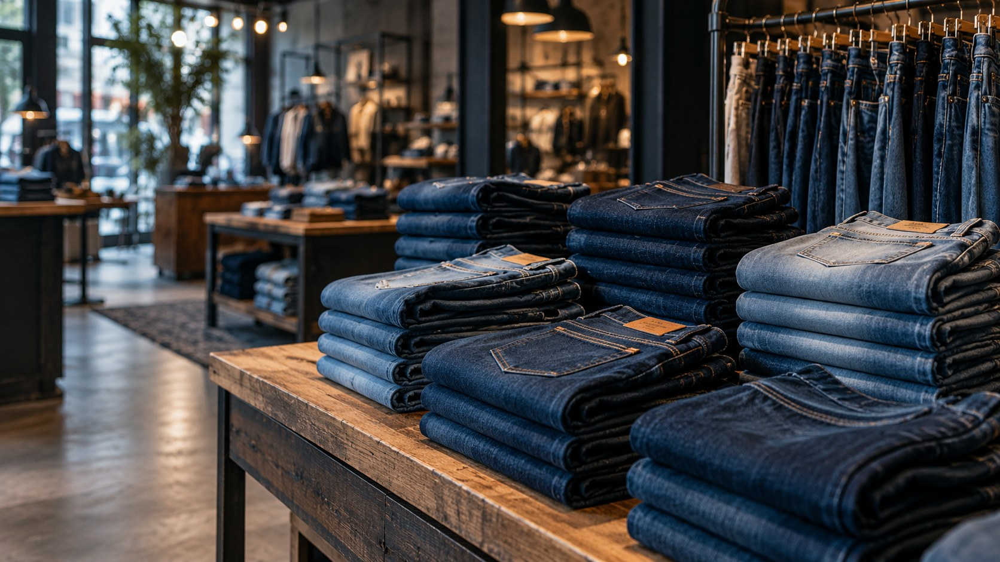
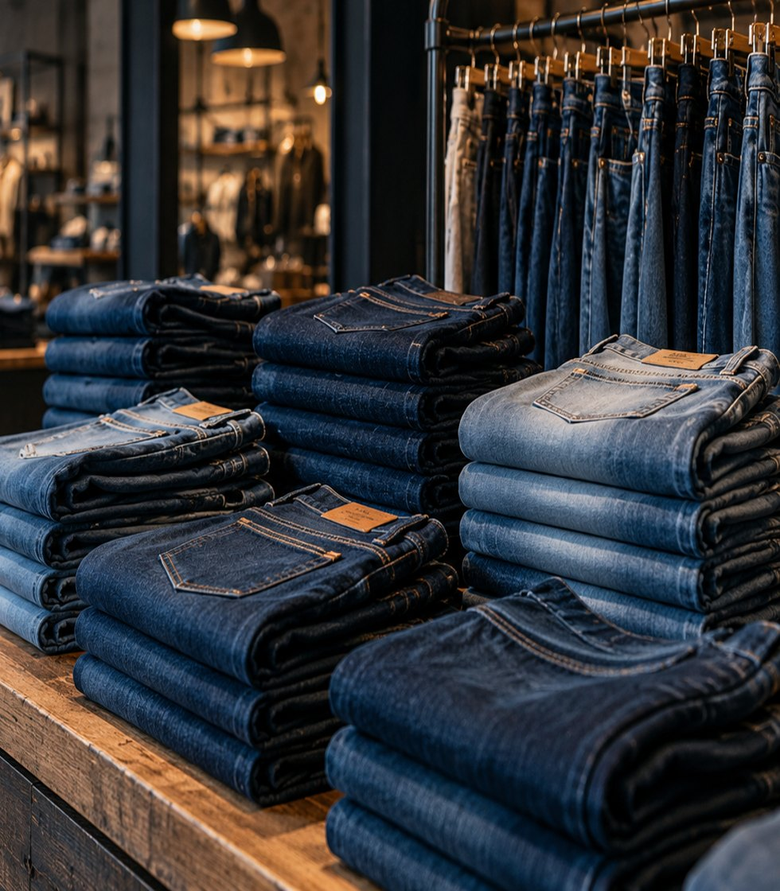

Ein Fit für dich.
Wir hören zu, schauen hin und finden gemeinsam die Passform, die wirklich zu dir passt.
Mehr zur BeratungDie richtige Jeans findest du nicht im Warenkorb. Sondern dort, wo dich jemand wirklich versteht. Entdecke deine neue Lieblingsjeans bei uns im Laden.

Wir glauben: Der beste Style beginnt mit einer Jeans, die sich richtig anfühlt. Dafür sind wir da – persönlich, ehrlich und direkt vor Ort.
Wir hören zu, schauen hin und finden gemeinsam die Passform, die wirklich zu dir passt.
Mehr zur BeratungAuf 260 m² warten Klassiker, neue Lieblingsstücke und Größen für ganz unterschiedliche Figuren.
Unser SortimentKeine Rücksendungen, keine Raterei. Einfach vorbeikommen, anprobieren und direkt mitnehmen.
Hier findest du uns
GUTER DENIM. GUTES GEFÜHL.High Waist oder Straight Leg? Dunkles Indigo oder heller Used-Look? Was auf dem Bildschirm ähnlich aussieht, fühlt sich am Körper ganz anders an.
Wir nehmen uns Zeit für deine Wünsche und zeigen dir Modelle, auf die du selbst vielleicht nicht gekommen wärst.
Von Denim-Ikonen bis zu neuen Favoriten – entdecke im Laden unter anderem:
Wandsbeker Allee 68 · 22041 Hamburg